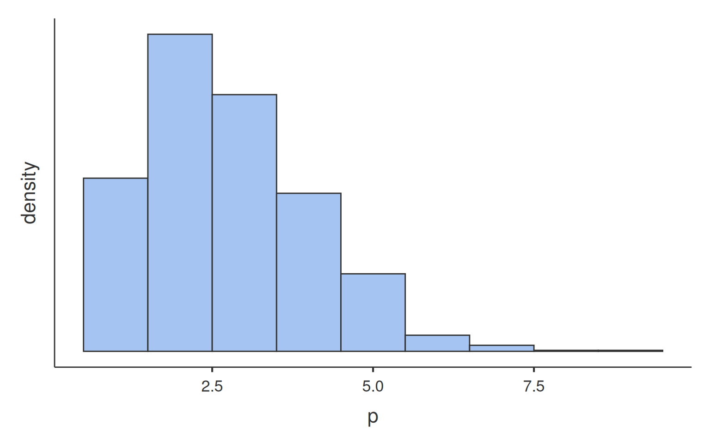
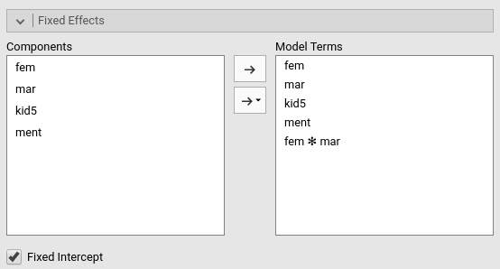

Poisson and Negative Binomial mixed models in jamovi
keywords jamovi, mixed models, generalized linear models, Poisson mixed model, multilevel logist, Negative Binomial
2.1.2
Draft version, mistakes may be around
In this example we estimate a (multilevel) mixed Poisson model and a Negative Binomial mixed model using jamovi GAMLj module.
One can follow the example by downloading the cvs
file and open it in jamovi. Be sure to
install the new version of GAMLj module
from within jamovi library. We use data from Long (1990) on the number
of publications produced by Ph.D. biochemists to illustrate the
application of Poisson. R analsyes of these data (not considering the
mixed model) can be found in Rodiguez
page. We slightly modified the data by defining a new variable,
program, that clusters together students in the same phd
program.
The research design
The data contain information about the number of publications of 915 PhD students in biochemestry. Varables are:
art: articles in last three years of Ph.D.fem: coded one for femalesmar: coded one if marriedkid5: number of children under age sixment: articles by mentor in last three yearsprogram: program in which the student is enrolled
We would like to predict the number of articles published in the last three years based on the available predictors.
Understanding the problem
This may look like a simple linear model task, but there are two issues to take into the account to decide which linear model to use: The dependent variable distribution and the structure of the data.
The distribition of the dependent variable is as follows:

Glancing at the histogram makes it clear that the distribution is not normal, but it roughly resembles the Poisson distribution. Here is an example of Poisson distribution with equivalent mean.

We can see that the shape of our distribution is not qualitatively
very different as compared with a theoretical Poisson distribution, so a
Generalized Linear Model with Poisson distribition may work. However, we
can check wheather our distribution is in line with the features of the
Poisson dist by checking its mean and variance. The Poisson distribution
has variance equal to the mean, in fact the simulated distribution in
the histogram has \(\bar{x}=1.699\) and
\(s^2=1.726\). The art
variable distribution has \(\bar{x}=1.693\) and \(s^2=3.71\), with a ratio variance/mean of
2.191, which does not really qualify for Poisson dist. This looks like a
case of overdispersion, cf. here
for details. We will than consider a Negative Binomial model to
account for possible overdispersion.
An example of Negative Binomial distribution with equivalent mean and variance is here.

The second issue one needs to deal with is the structure of the data.
We have seen that the students are not a random sample of students drawn
independently one each other, but they are grouped by the program they
are enrolled in. There are 83 programs, in each program there are on
average 11 students. Because students in the same program may be more
similar one each other than across programs, programs may
cluster the scores of the dependent variable and create dependency in
the data. To take dependency into the account, we will use a random
intercepts model estimated with a Generalized Mixed Model.
To recap: we are going to estimate a Negative Binomial Mixed Model using GAMLj module.
The model
Setting up the model is straightforward. After selecting
Generalized Mixed Models in the Linear Models
menu, we select the Negative Binomial type at the top of
the input interface, we put the dependent variable art in
the Dependent Variable field, fem (gender) and
mar (marital status) as factors, and kids5 (number of kids)
and ment (# of pubs of the mentor) as covariates
(continuous independent variables). Crucially, we select
program as the clustering variable by moving it to the
Cluster Variables field.
Fixed effects are defined automatically, with all main effects and the interactions between the factors.

As for the random effects, we need to move the intercepts in the
field of Random Coefficients.
Results
General Info
We first have a look at the model info table.
The first four rows tell us info about the model set up, which should be as we intended (those are useful if we share our results, the reader understands what we have done). The remaning rows inform us about the general fit of the model. Please notice that the \(R^2\) are not computed. It is not an error. At the moment (version 2.1.2) the indexes are not implemented for the negative binomial model. In the future we hope to fix this.
An interesting statistics is the \(Chi^2/DF\). This is an approximation of the overdispersion of the model ( cf. here for details ). A value of 1 means no overdispersion, so it looks like our concerns about overdispersion were a bit exagerated. We can check (we do later on down this page) a Poisson model to see if we can improve the fit. We will compare the AIC and BIC of the present model with the Poisson model’s and see whether we can do better.
Random component
The second table we need to evaluate is the random component. Here we
find the variance of the random effects, in this case the intercept
varying across program.
We can see that there are 915 students clustered in 83 different programs. Programs intercepts show a tiny variance, corresponding to a ICC (intra-class correlation) of .048, about 5% of the variance. Tiny as it may be, it is not zero, so we keep the intercepts as a random coefficient.
We can now look at the overall effects.
We found a main effect of gender (fem), of kids
(kid5) and mentor productivity (ment). To
interpret the effects, for gender we can explore the means of the two
genders in the expected number of articles, for the other two
independent variables we can look at the coefficients to understand the
direction and size of the effects.
Means can be obtained in the Estimated Marginal Means
panel.
We should recall that in GAMLj Generalized models, the expected means
are always reported transformed back in the original scale of the
dependent variable, so we can see that Men show a higher
expected number of publications (1.75) than Women
(1.38).
As for the continuous independent variables, we look at the fixed effects coefficients.
We can look at the exp(B) coefficients because they are
easier to interpret than the Estimates. The latter are the
liner coefficients, and are expressed in the scale of the liner
predictor, in this case \(log(art)\).
The exp(B) , on the other hand, get rid of the logarithm,
and infor us on the rate of change of the dependent variable as we move
the independent variable of one unit. Thus, expected number of articles
increases 1.028 times for each article published by the mentor
(ment effect), whereas it decreases \(1/.834=1.199\) times for one kid more.
Recall that the exp(b) is the rate of change. If
exp(B) is less than 1, we should say that the expected
value increases .834 times, which means that it decreases and
sounds awkward, so we take the reciprocal to express how much the
expected value decreases.
As a final touch, we can visualize the results by asking the plot of the expected number of articles by number of kids or number of mentor’s papers.

Examples
Some worked out practical examples can be found here
Comments?
Got comments, issues or spotted a bug? Please open an issue on GAMLj at github or send me an email